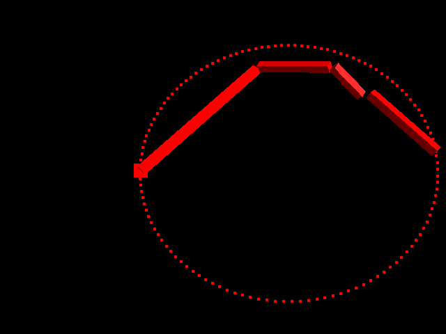
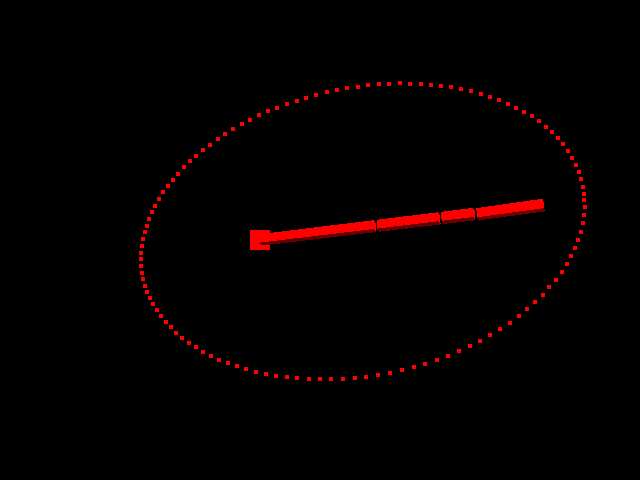
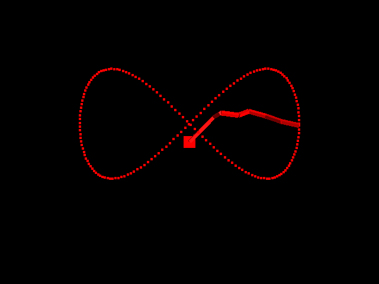
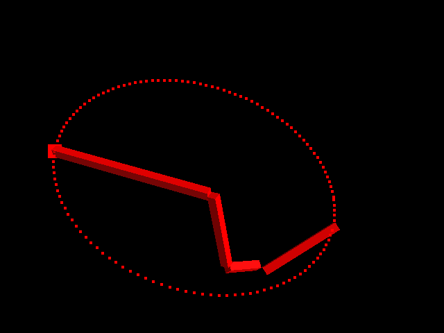
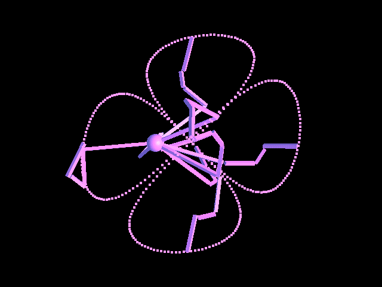

README
Extra credit features: Different arms, joint limits, multiple arms.

Basic demonstration on a circle. Segment lengths vary from .4 to .1; 4 segments; immobile base.
./as4 test.in

Demonstrates being able to attempt to solve for out-of-reach goal states.
./as4 reach.in

A different arm, this time with 7 small links.
./as4 figure8.in

The root joint is bounded in motion to a single quadrant; tries "best guess" solution to unreachable points due to joint limits.
./as4 circle.in

Acid spider mode. Demonstrates multiple arms.
./as4 multiple.in -a -r -m 12